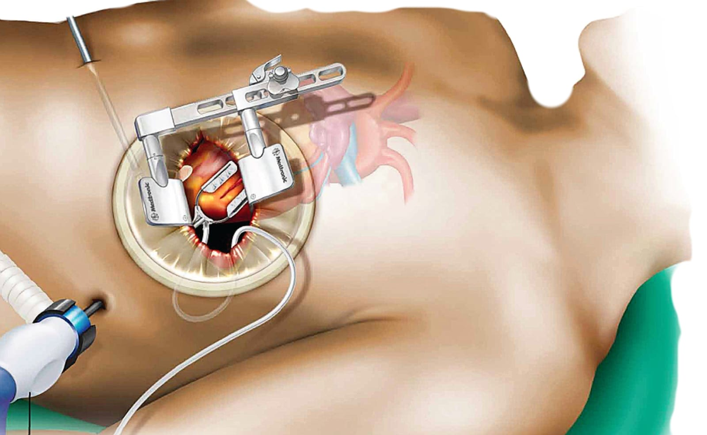

Precision • Excellence • Quality • Safety
Minimally Invasive Cardiac Surgery
Elegance & Beauty in Cardiac Surgery
On a single platform
Prof. Dr. Md. Rokonujjaman (Selim)
MS (CVTS) • FCPS (CVS) • MRCPS (Glasgow) • FACS (USA)
Cardiac, Vascular & Thoracic Surgeon


Adult • Pediatric
Together on a Single Platform
Adult & Pediatric Minimally Invasive Cardiac Surgery
One dedicated cardiac team
Prof. Dr. Md. Rokonujjaman (Selim)
MS (CVTS) • FCPS (CVS) • MRCPS (Glasgow) • FACS (USA)
Cardiac, Vascular & Thoracic Surgeon
- Precision
- Excellence
- Quality
- Safety
- Elegance & Beauty in Cardiac Surgery
- Minimally Invasive Cardiac Surgery — The Next Generation of Cardiac Surgery
- Prof. Dr. Rokonujjaman Selim
- Adult & Pediatric Minimally Invasive Cardiac Surgery — Together on a Single Platform
- Precision
- Excellence
- Quality
- Safety
- Elegance & Beauty in Cardiac Surgery
- Minimally Invasive Cardiac Surgery — The Next Generation of Cardiac Surgery
- Prof. Dr. Rokonujjaman Selim
- Adult & Pediatric Minimally Invasive Cardiac Surgery — Together on a Single Platform
 India.
India.